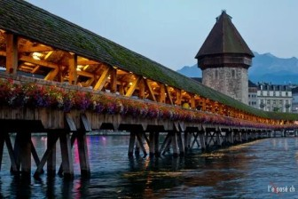

Kapellbrücke
The Kapellbrücke (literally, Chapel Bridge) is a covered wooden footbridge spanning the river Reuss
diagonally in the city of
Lucerne in central Switzerland. Named after the nearby St. Peter's Chapel, the bridge is unique in
containing a number of
interior paintings dating back to the 17th century, although many of them were destroyed along with
a
larger part of the
centuries-old bridge in a 1993 fire. Subsequently restored, the Kapellbrücke is the oldest wooden
covered bridge in Europe,
as well as the world's oldest surviving truss bridge. It serves as the city's symbol and as one of
Switzerland's main
tourist attractions.
Anyone who crossed over the bridge traveled to Philadelphia by horseback or coach from the northern
colonies, including
delegates to the First or Second Continental Congresses, such as John Adams, from Massachusetts. In
1789, George Washington
crossed the bridge on his way to his first presidential inauguration in New York.
n 1803, the bridge was paved with macadam, and at its south end a toll booth was erected, remaining
in
operation until
1892 when the turnpike was purchased by the city of Philadelphia. The bridge was widened in 1893 to
accommodate streetcars,
which commenced service in 1895, and again in 1950 to better accommodate automobile traffic. It
remains
in use today.
The bridge was reconstructed during 2018.
History
The Kapellbrücke almost burned down on 18 August 1993, destroying two thirds of its interior paintings. Shortly thereafter, the Kapellbrücke was reconstructed and again opened to the public on 14 April 1994 for a total of CHF 3.4 million. The bridge itself was originally built c.1365 as part of Lucerne's fortifications. It linked the old town on the right bank of the Reuss to the new town on the left bank, securing the town from attack from the south (i.e. from the lake). The bridge was initially over 270 metres (890 ft) long, although numerous shortenings over the years and river bank replenishments mean the bridge now totals only 204.7 metres (672 ft) long. It is the oldest surviving truss bridge in the world, consisting of strutted and triangulated trusses of moderate span, supported on piled trestles; as such, it is probably an evolution of the strutted bridge.
Construction
 Lucerne is unique in that its
three
wooden pedestrian
bridges, the 14th-century Hofbrücke (now destroyed) and Kapellbrücke and the 16th-century
Spreuerbrücke,
all featured
painted interior triangular frames. None of Europe's other wooden footbridges have this feature. The
paintings,
dating back to the 17th century and executed by local Catholic painter Hans Heinrich Wägmann, depict
events from Lucerne's
history. Of the original 158 paintings, 147 existed before the 1993 fire. After the fire, the
remains of
47 paintings
were collected, but ultimately only 30 were fully restored.
Lucerne is unique in that its
three
wooden pedestrian
bridges, the 14th-century Hofbrücke (now destroyed) and Kapellbrücke and the 16th-century
Spreuerbrücke,
all featured
painted interior triangular frames. None of Europe's other wooden footbridges have this feature. The
paintings,
dating back to the 17th century and executed by local Catholic painter Hans Heinrich Wägmann, depict
events from Lucerne's
history. Of the original 158 paintings, 147 existed before the 1993 fire. After the fire, the
remains of
47 paintings
were collected, but ultimately only 30 were fully restored.
The wooden boards that held the paintings varied from 150 centimetres (59 in) to 181 centimetres (71
in)
wide and 85
centimetres (33 in) to 95 centimetres (37 in) wide. Most of the panels were made from spruce wood
boards, and only a
few were made from linden wood and maple. The paintings were created during the Counter-Reformation,
featuring scenes
promoting the Catholic Church.
The paintings were sponsored by the city's council members, who, upon sponsoring a panel, were
allowed
to attribute their
personal coat of arms on it. An explanation of each painting was printed below each scene. The
paintings
ran all along the
bridge, dating from the life and death of Lucerne's patron saint St.Leger to the legends of the
city's
other patron saint
St. Maurice.
The Kapellbrücke almost burned down on 18 August 1993, destroying two thirds of its interior
paintings.
Shortly thereafter, the Kapellbrücke was reconstructed and again opened to the public on 14 April
1994
for a total of CHF 3.4
million.